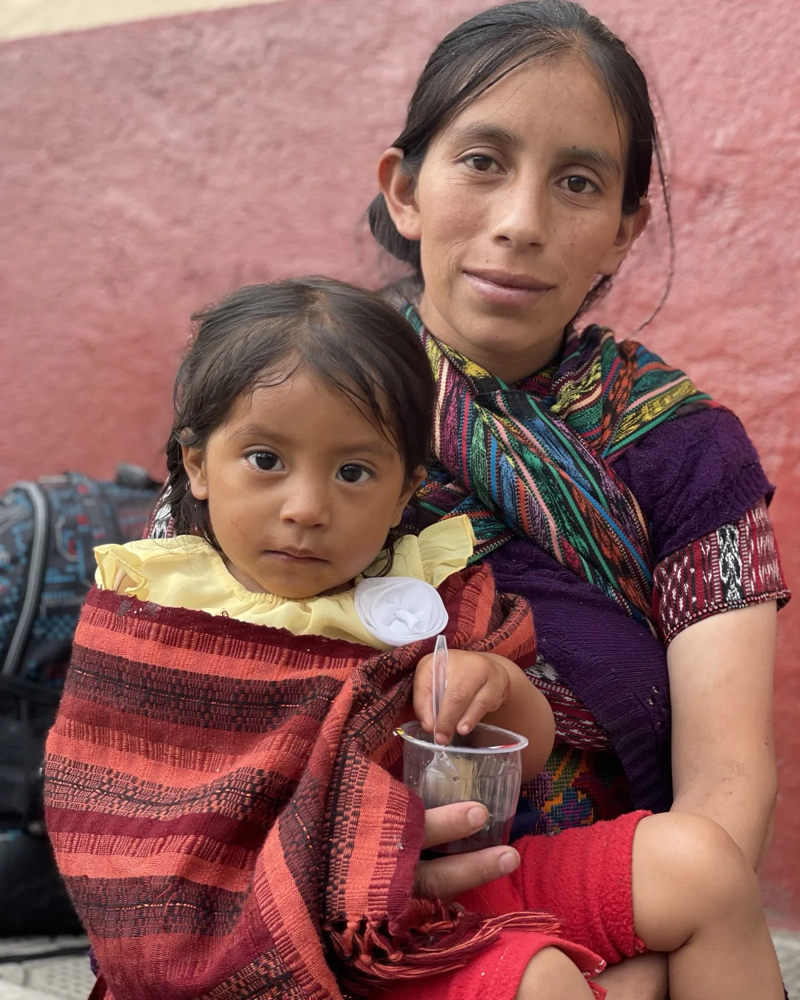
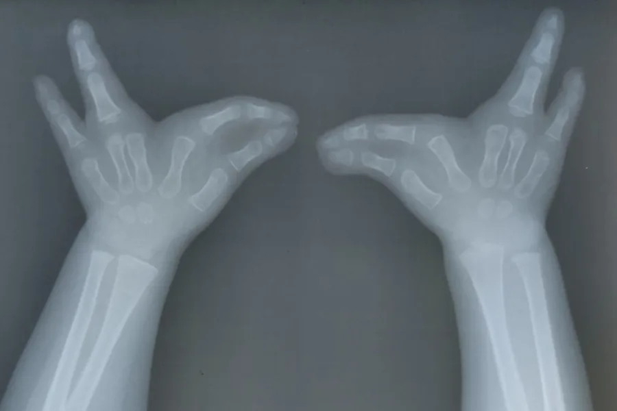
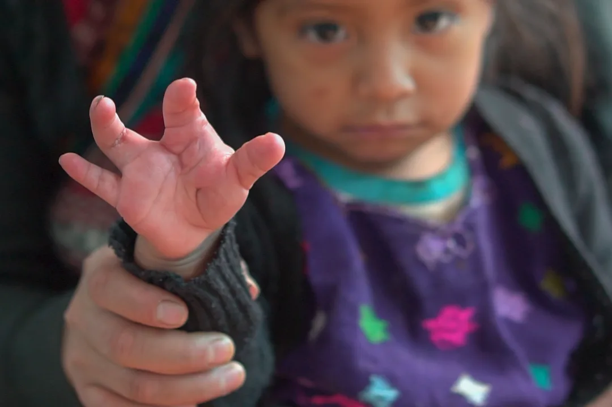

La historia de Ebelinda
Dos años y medio, y lista para tomar el mundo en sus manos.

Ebelinda nació con sindactilia (dedos unidos) en ambas manos. En su primer viaje con ALMA en 2021, el Dr. Patrick Mullen, cirujano de Kootenai Health, corrigió su mano derecha con su mamá, Juana López, a su lado. La familia envió videos de su terapia de manos. En una misión posterior de ALMA, el equipo corrigió quirúrgicamente su mano izquierda, a la que le faltaba el dedo medio, y separó su pulgar del índice.

1 · Antes de la cirugía Radiografía de ambas manos, con sindactilia de nacimiento

2 · 2021: mano derecha El Dr. Patrick Mullen corrige su mano derecha en su primera misión con ALMA

3 · Mano derecha, corregida Su mano derecha después de la cirugía
4 · Seguimiento
El seguimiento importa tanto como la cirugía. La atención de Ebelinda continuó en Guatemala, con visitas a su cirujano y terapia de manos cerca de casa, mucho después de que el equipo de la misión se fue. Esa atención local es lo que convierte una operación en un cambio duradero.